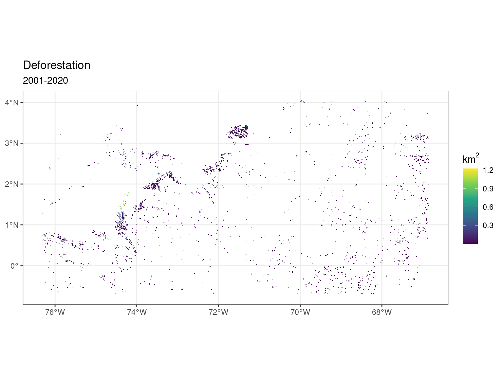
Colombian Amazon
Deforestation
We used the Tropical Moist Forest (TMF) product from the European Joint Research Centre (JRC) to asses forest surface evolution between 2001 and 2020 at 30-m and yearly resolutions. We focused on pixels categorized as undisturbed forest in 2001 and deforested in 2020. We aggregated the deforestation information to 0.01-degree (~1km) by calculating the deforested surface in \(km^2\). Deforestation is more prevalent in the North-West deforestation front. Larger spatial or time period could later be used, as well as including back degradation.
Precipitation
We used CHIRPS data downscaled at 0.01-degree resolution with daily precipitation accumulation summed into yearly precipitation. We then calculated precipitation anomalies as the yearly means over two periods at the end (2018 to 2020) and start (2001 to 2003) of the study period. Using 3-y averages reduces the influences of climate variability. Precipitation is structured by a wet gradient from north-west to south-east. Anomalies are more heterogeneous, with a greater loss of precipitation in the centre of the region. Monthly or seasonal indices could be used at a later stage, but we must be wary of seasonal variations across space.
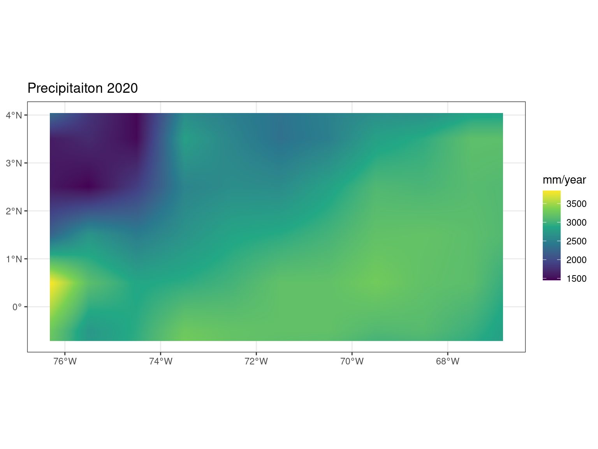
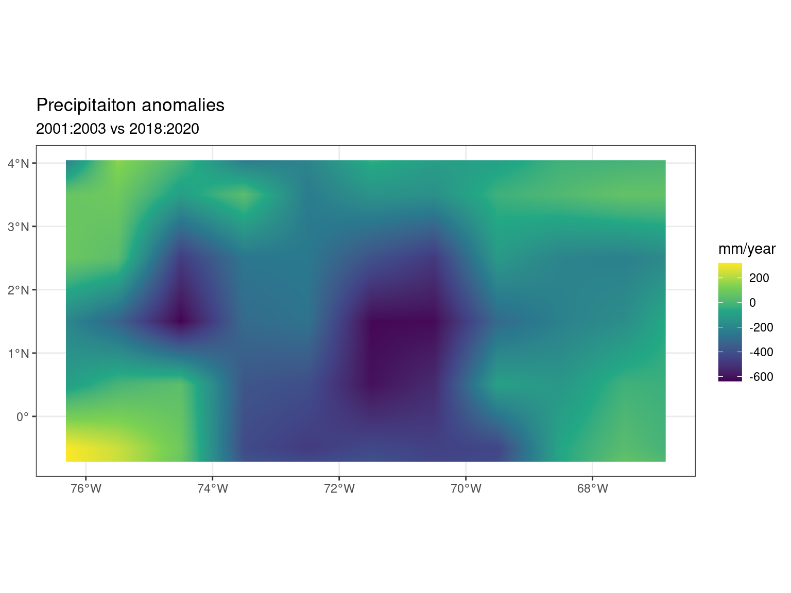
Temperature
Following Butt et al. (2023), we used land surface temperature (LST) data from MOD11A2 version 6 MODIS 8-d LST data at 0.01-degree resolution grid. We excluded data where the estimated emissivity error was greater than 0.02 and where the LST error was greater than 1 K. Extensive cloud cover can reduce the spatial and temporal availability of satellite data. For this reason, we focus our analysis on the dry season when there is less cloud cover. We thus worked with January the driest month in Guiavare. Dry season surface temperature changes were then calculated by comparing temperature of the driest month for two periods at the end (2018 to 2020) and start (2001 to 2003) of the study period. Using 3-y averages reduces the influences of climate variability. We computed variations in mean temperature (tas). Monthly or seasonal indices could be used at a later stage, but we must be wary of seasonal variations across space. Daily extrema could also be used.
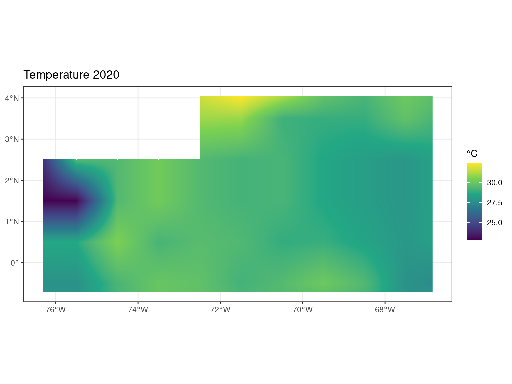
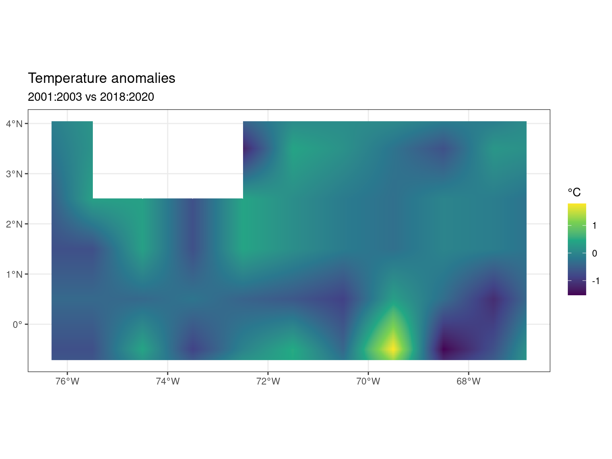
Comparisons
Comparing deforestation surfaces to climate anomalies seems to indicate a decrease in precipitation but an increase in temperature with increasing deforestation surfaces. But caution should be taken because of possible spatial proximity between deforested pixels that could confound with the spatial structure of climate anomalies.
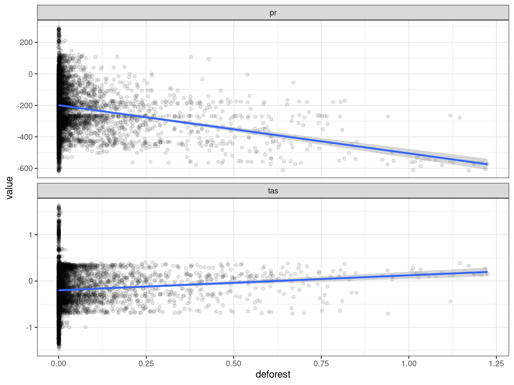
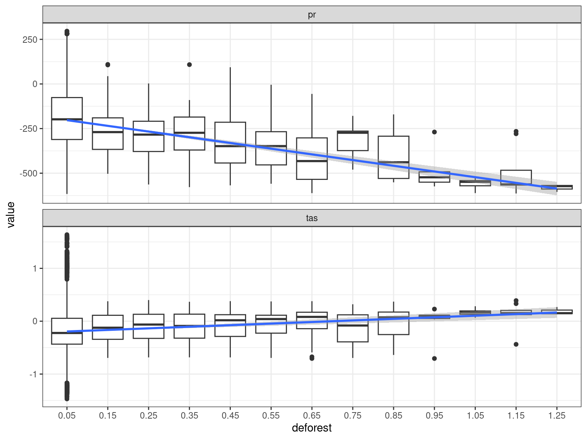
Linear regressions
Classic linear regression with accounting for spatial autocorrelation found a general and signficant decrease of precipitation (-189.94 mm/year) and temperature (-0.20 °C) and a significant decrease of precipitation (-306.05 mm/year) but a significant increase in temperature (+0.32 °C) with deforestation. However, inspecting models residuals revealed a significant spatial autocorrelation of model errors up to several hundred of kilometres questioning the robustness of the results.
| pr | tas | |||||
| Predictors | Estimates | CI | p | Estimates | CI | p |
| intact | -198.94 | -202.78 – -195.10 | <0.001 | -0.20 | -0.21 – -0.19 | <0.001 |
| deforest | -306.05 | -335.62 – -276.48 | <0.001 | 0.32 | 0.24 – 0.40 | <0.001 |
| Observations | 6844 | 6844 | ||||
| R2 / R2 adjusted | 0.666 / 0.666 | 0.177 / 0.176 | ||||
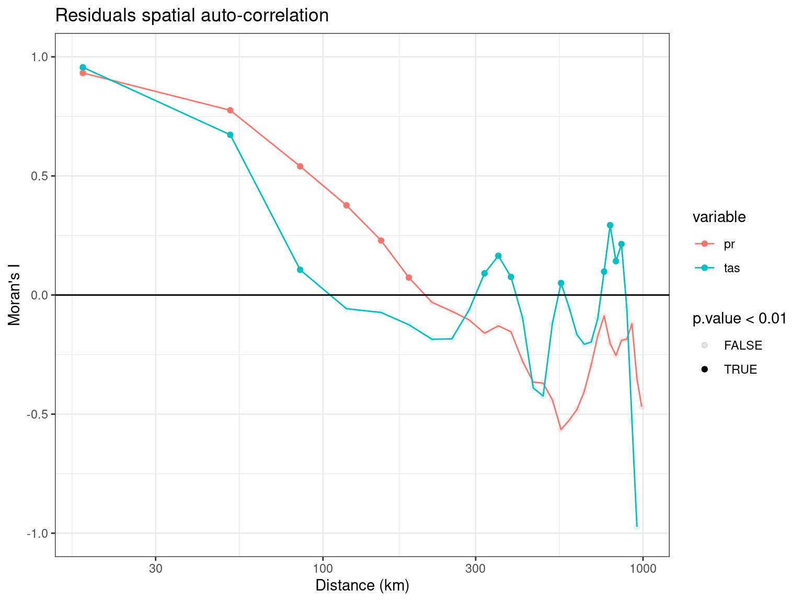
Spatial regressions
To account for spatial autocorrelation, we took advantage of a method including spatial autocorrelation in model error (spNNGP, Gaussian univariate Bayesian spatial regression models using Nearest Neighbor Gaussian Processes). To assess the model performance, we first looked at trace plots of the Bayesian model. The acceptance rates were over 90% and the parameters seemed to have converged after the warm-up period. But looking closer, only the deforestation parameter for temperature seemed to have correctly converged besides others have low intervals of variations. However, residuals of the models are not anymore spatially structured indicating that the Nearest Neighbor Gaussian Processes removed this issue. In this results, we have a significant but small decrease of precipitation (-2 to -7 mm/Year) and a non significant increase in temperature (0-0.015°C) with increasing deforestation surface.
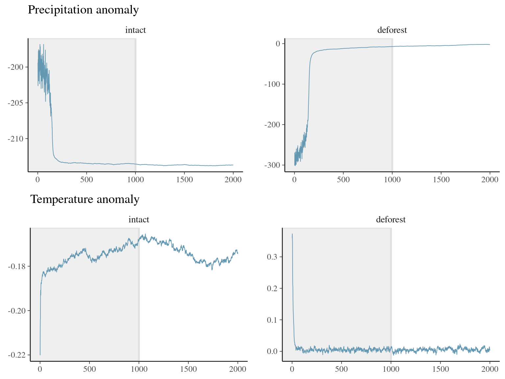
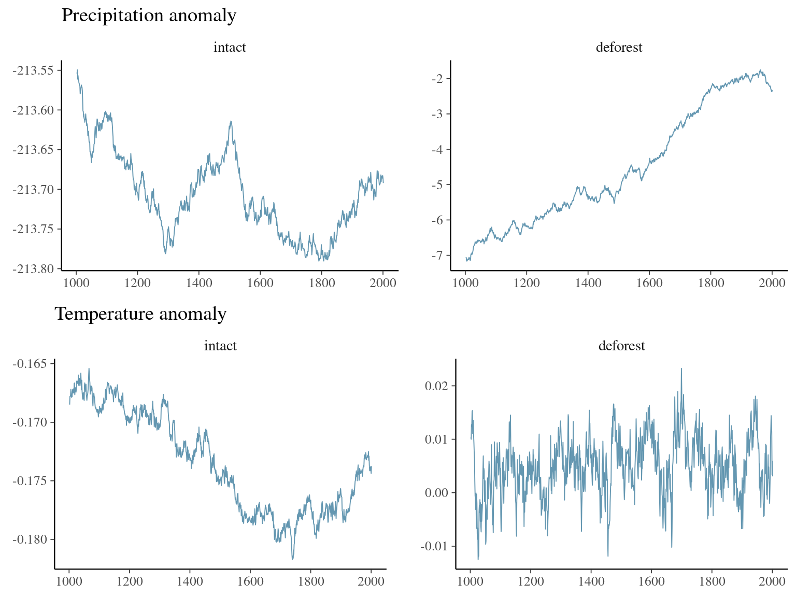
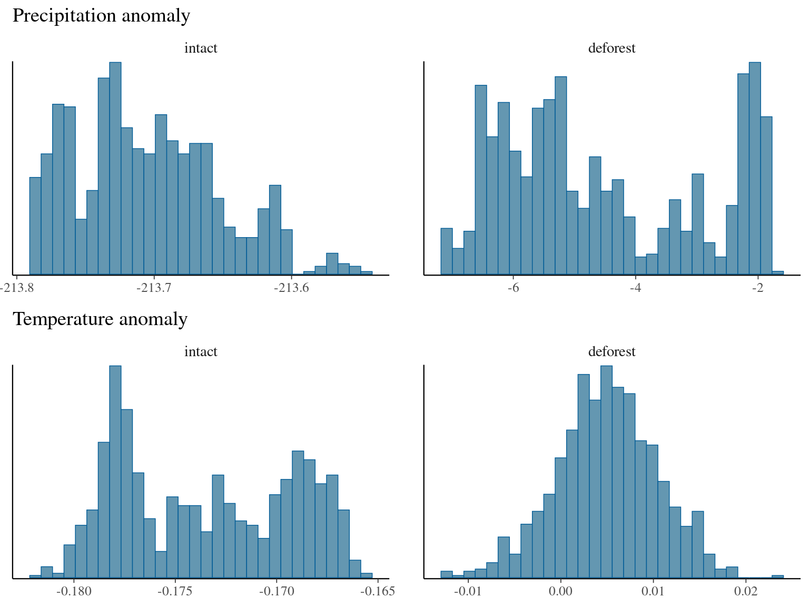
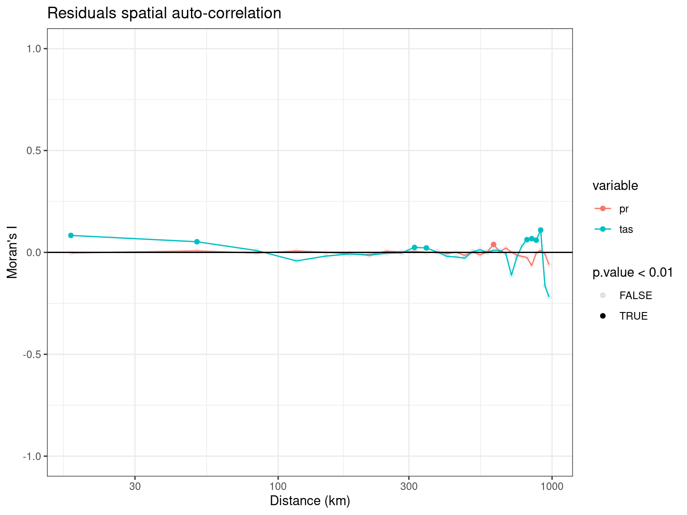
Call:
spNNGP(formula = pr ~ 0 + intact + deforest, data = data, coords = data[c("x",
"y")], method = "latent", n.neighbors = 10, starting = list(phi = 3/0.5,
sigma.sq = 1, tau.sq = 1), tuning = list(phi = 0.2), priors = list(phi.Unif = c(3/1,
3/0.1), sigma.sq.IG = c(2, 1), tau.sq.IG = c(2, 1)), cov.model = "exponential",
n.samples = 2000, n.omp.threads = 20, return.neighbor.info = TRUE,
fit.rep = TRUE, sub.sample = list(start = 1000), n.report = 1000)
Model class is NNGP, method latent, family gaussian.
Model object contains 2000 MCMC samples.
Chain sub.sample:
start = 1000
end = 2000
thin = 1
samples size = 1001
2.5% 25% 50% 75% 97.5%
intact -213.7841 -213.7445 -213.7119 -213.6708 -213.6036
deforest -6.8149 -5.9039 -5.0746 -2.9655 -1.8901
sigma.sq 685.3830 701.2010 709.2474 717.4325 735.4819
tau.sq 0.0524 0.0700 0.0783 0.0859 0.0953
phi 3.0000 3.0001 3.0003 3.0008 3.0017
Call:
spNNGP(formula = tas ~ 0 + intact + deforest, data = data, coords = data[c("x",
"y")], method = "latent", n.neighbors = 10, starting = list(phi = 3/0.5,
sigma.sq = 1, tau.sq = 1), tuning = list(phi = 0.2), priors = list(phi.Unif = c(3/1,
3/0.1), sigma.sq.IG = c(2, 1), tau.sq.IG = c(2, 1)), cov.model = "exponential",
n.samples = 2000, n.omp.threads = 20, return.neighbor.info = TRUE,
fit.rep = TRUE, sub.sample = list(start = 1000), n.report = 1000)
Model class is NNGP, method latent, family gaussian.
Model object contains 2000 MCMC samples.
Chain sub.sample:
start = 1000
end = 2000
thin = 1
samples size = 1001
2.5% 25% 50% 75% 97.5%
intact -0.1799 -0.1776 -0.1738 -0.1693 -0.1667
deforest -0.0066 0.0014 0.0050 0.0085 0.0152
sigma.sq 0.0081 0.0083 0.0085 0.0086 0.0088
tau.sq 0.0005 0.0006 0.0006 0.0006 0.0006
phi 3.0001 3.0010 3.0019 3.0031 3.0063